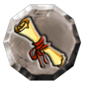

13 |
Vakjes |
 |
In het speltype Adventure (avontuur) zie je de volgende vakjes op het bord. Vakje met splitsing
Als je dit vakje passeert, moet je een richting kiezen. Reparatievakje
Als je dit vakje passeert met een beschadigd wagentje, kun je het repareren voor 500 munten. Vakje met uitdaging op het bord
Als het wagentje op dit vakje terechtkomt, moet je een uitdaging op het bord spelen. Vakje met perkamentrol  Als het wagentje dit vakje passeert, mag je een perkamentrol kopen. Vakje met minispel Als het wagentje op dit vakje terechtkomt, moeten alle spelers samen een minispel spelen. Vakje met Toverspook
Dit vakje vind je alleen bij de ingang van sommige speciale locaties. Als het wagentje het vakje passeert, verschijnt het Toverspook en wordt iedereen verkleind. Pas dan kun je de speciale locatie bereiken. Als je al klein bent, krijg je na het passeren van dit vakje je normale grootte terug. Leeg vakje
Als het wagentje op dit vakje terechtkomt, gebeurt er niets. Vakjes met -10 en -20
Als het wagentje op deze vakjes terechtkomt, jaagt een spook je de stuipen op het lijf en verliest iedereen 10 of 20 munten. Vakjes met +20, +30 en +50
Als het wagentje op deze vakjes terechtkomt, krijgen alle spelers 20, 30, of 50 munten. |


 |
 |
 |